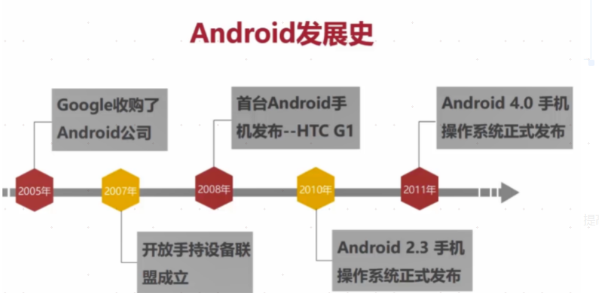
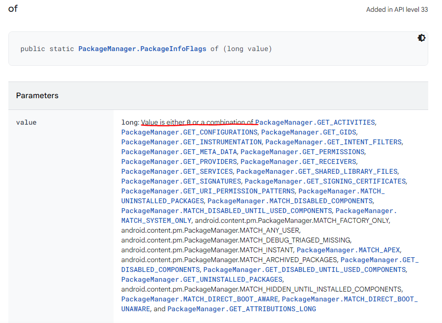
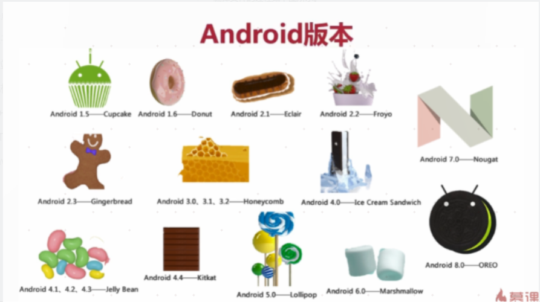

背景
发展历史

系统
SDK与NDK
SDK：Software Development Kit，软件开发工具包 NDK：Native Development Kit，Android原生工具开发包
安卓系统架构
API级别和版本号
https://source.android.com/setup/start/build-numbers
Android系统架构
总的来说，Android的系统体系结构分为四层，自顶向下分别是：
- 应用程序(Applications)
- 应用程序框架(Application Frameworks)
- 系统运行库与Android运行环境(Libraris & Android Runtime)
- Linux内核(Linux Kernel)
安卓系统结构示意图 
下面对每层进行详细说明
1. 应用程序(Applications)
Android会同一系列核心应用程序包一起发布，该应用程序包包括email客户端，SMS短消息程序，日历，地图，浏览器，联系人管理程序等。所有的应用程序都是使用JAVA语言编写的。通常开发人员就处在这一层。
2. 应用程序框架(Application Frameworks)
提供应用程序开发的各种API进行快速开发，也即隐藏在每个应用后面的是一系列的服务和系统，大部分使用Java编写，所谓官方源码很多也就是看这里，其中包括：
- 丰富而又可扩展的视图（Views），可以用来构建应用程序， 它包括列表（lists），网格（grids），文本框（text boxes），按钮（buttons）， 甚至可嵌入的web浏览器。
- 内容提供器（Content Providers）使得应用程序可以访问另一个应用程序的数据（如联系人数据库）， 或者共享它们自己的数据
- 资源管理器（Resource Manager）提供 非代码资源的访问，如本地字符串，图形，和布局文件（ layout files ）。
- 通知管理器 （Notification Manager） 使得应用程序可以在状态栏中显示自定义的提示信息。
- 活动管理器（ Activity Manager） 用来管理应用程序生命周期并提供常用的导航回退功能。
3. 系统运行库与Android运行环境(Libraris & Android Runtime)
1) 系统运行库
Android 包含一些C/C++库，这些库能被Android系统中不同的组件使用。它们通过 Android 应用程序框架为开发者提供服务。以下是一些核心库：
- Bionic系统 C 库 - 一个从 BSD 继承来的标准 C 系统函数库（ libc ）， 它是专门为基于 embedded linux 的设备定制的。
- 媒体库 - 基于 PacketVideo OpenCORE；该库支持多种常用的音频、视频格式回放和录制，同时支持静态图像文件。编码格式包括MPEG4, H.264, MP3, AAC, AMR, JPG, PNG 。
- Surface Manager - 对显示子系统的管理，并且为多个应用程序提 供了2D和3D图层的无缝融合。这部分代码
- Webkit,LibWebCore - 一个最新的web浏览器引擎用，支持Android浏览器和一个可嵌入的web视图。鼎鼎大名的 Apple Safari背后的引擎就是Webkit
- SGL - 底层的2D图形引擎
- 3D libraries - 基于OpenGL ES 1.0 APIs实现；该库可以使用硬件 3D加速（如果可用）或者使用高度优化的3D软加速。
- FreeType -位图（bitmap）和矢量（vector）字体显示。
- SQLite - 一个对于所有应用程序可用，功能强劲的轻型关系型数据库引擎。
- 还有部分上面没有显示出来的就是硬件抽象层。其实Android并非讲所有的设备驱动都放在linux内核里面，而是实现在userspace空间，这么做的主要原因是GPL协议，Linux是遵循该 协议来发布的，也就意味着对 linux内核的任何修改，都必须发布其源代码。而现在这么做就可以避开而无需发布其源代码，毕竟它是用来赚钱的。 而 在linux内核中为这些userspace驱动代码开一个后门，就可以让本来userspace驱动不可以直接控制的硬件可以被访问。而只需要公布这个 后门代码即可。一般情况下如果要将Android移植到其他硬件去运行，只需要实现这部分代码即可。包括：显示器驱动，声音，相机，GPS,GSM等等
2) Android运行环境
该核心库提供了JAVA编程语言核心库的大多数功能。 每一个Android应用程序都在它自己的进程中运 行，都拥有一个独立的Dalvik虚拟 机实例。Dalvik被设计成一个设备可以同时高效地运行多个虚拟系统。 Dalvik虚拟机执行（.dex）的Dalvik可执行文件，该格式文件针对小内存使用做了 优化。同时虚拟机是基于寄存器的，所有的类都经由JAVA编译器编译，然后通过SDK中 的 "dx" 工具转化成.dex格式由虚拟机执行。
4. Linux内核(Linux Kernel)
Android的核心系统服务依赖于Linux 2.6 内核，如安全性，内存管理，进程管理， 网络协议栈和驱动模型。 Linux 内核也同时作为硬件和软件栈之间的抽象层。其外还对其做了部分修改，主要涉及两部分修改：
- Binder (IPC)：提供有效的进程间通信，虽然linux内核本身已经提供了这些功能，但Android系统很多服务都需要用到该功能，为了某种原因其实现了自己的一套。
- 电源管理：主要是为了省电，毕竟是手持设备嘛，低耗电才是我们的追求。
注:最后附上原博连接懒虫一个V：android系统体系结构，关于谷歌Android源码的目录结构并未一并贴出可在原博查阅
Dalvik
Dalvik是Google公司设计的，用于在Android平台上运行的虚拟机，其指令售用于寄存器架构，执行其特有的dex文件来完成对象生命周期管理、堆栈管理、线程管理、安全异常管理、垃圾回收等重要功能。每一个Android应用在底层都会对应一个独立的Dalvik虚拟机实例，其代码在虚拟机的解释下得以执行，Dalvik虚拟机编译文件的过程如下图所示。
Android版本

- Gingerbread 号称最稳定 手机届的xp系统
- honeycomb 平板
- 4.0 手机平板兼容 默认的 比较流行的